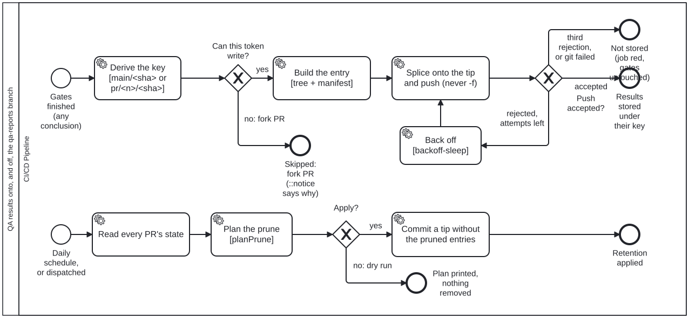

Generated from
cat-harness/processes/sdlc/qa-publish.bpmnbygen-processes-viz.ts— do not edit here. All processes
Process_QaPublish · strict · 7 step(s)
How a run’s derived QA results become a durable, commit-keyed record without being committed to main, and how that record is retired.
You are in this process when CI has finished the gates for a push to main or a same-repository pull request (the publish path), or when the daily retention run fires (the prune path). Both are mechanical: nothing here judges a result, and nothing here decides mergeability.
The record it writes is what a later --against <ref> reads as a baseline. A publish that did not happen makes that baseline UNKNOWN for every later change, which is why a red publish is still a red to fix even though it blocks nothing. Judgements are never written here: they stay on main in test/attestations/ (owner ruling D2 (a)).

| lane | role | what it does here |
|---|---|---|
| CI/CD Pipeline | build-pipeline |
Runs both paths as fixed programs. It decides nothing that needs judgement: whether a token can write is read from the event, whether a push was accepted is the push’s exit code (never its stderr — spike 3ds9 measured a harmless “push negotiation failed; proceeding anyway”), and what retention removes is planPrune’s rule. A PR whose state cannot be read is KEPT: could-not-determine never deletes. |
Every one of the 7 step(s) is documented.
| step | lane | skill / sub-process | what it does |
|---|---|---|---|
| **Derive the key [main/ `Task_DeriveKey` |
CI/CD Pipeline | qa-reports |
qa:publish --github reads the event: a push to main publishes under main/<sha>/, a pull request under pr/<n>/<head-sha>/ — the head that was tested, not the merge ref. It also reads whether the token can write, which the gateway after it routes on. |
Build the entry [tree + manifest]Task_BuildEntry |
CI/CD Pipeline | qa-reports |
First the working copy is produced (qa:refresh, bean 3hk4): while the checkout still tracks test/results/, the commit’s own copy is the record and nothing runs; once it does not, every declared QA writer runs into the empty tree, because the gates are in judge mode and wrote nothing a publish could carry. A refresh that leaves a writer failed, a family empty or a file unclaimed is INCOMPLETE: the job goes red and qa:publish --completeness refuses, so a partial tree is never stored as the commit’s record — the “Not stored” outcome, reached before any push. Then it hashes the working copy of every declared qa directory (<instance>/test/results/**, byte-identical to the checkout’s layout) into a tree through a private index, and writes manifest.json (qa-reports-manifest/v1): inputs, producers, verdict counts and the gates’ result. Identical JSON is the same blob, so an unchanged family costs nothing to store again. Its git objects live in a private bare repository, never in the checkout’s own store. |
Splice onto the tip and push (never -f)Task_SpliceAndPush |
CI/CD Pipeline | qa-reports |
Fetch the branch tip, splice this entry into its tree, commit-tree -p <tip>, and push without -f, with pack.useSparse=false so blobs already on the remote under another key are not resent. Writers own disjoint keys, so splicing onto whatever tip is current loses nobody’s entry. |
Back offTask_Backoff |
CI/CD Pipeline | qa-reports |
Wait the same intervals backoff-sleep.ts uses, then go round again: fetch the new tip and splice onto it. Three attempts in all. |
Read every PR’s stateTask_ReadPrStates |
CI/CD Pipeline | qa-reports |
gh pr list --state all: number, state and when it closed, so each pr/<n>/ entry can be judged against its close date. A PR missing from the list is unknown, and an unknown is kept. |
Plan the pruneTask_PlanPrune |
CI/CD Pipeline | qa-reports |
Keep every main/<sha> for 90 days and one per day after that; drop pr/<n> 7 days after the PR closed. The rule is planPrune in scripts/qa-store.ts, pinned by its tests, and the plan is printed whether or not it is applied. |
Commit a tip without the pruned entriesTask_ApplyPrune |
CI/CD Pipeline | qa-reports |
One new commit whose tree lacks the pruned entries, parented on the current tip, through the same fetch → rebuild → push loop as a publish: no -f, three attempts. History is not rewritten — truncating it is a deletion of a different order and the owner’s call (deletion-requires-confirmation), not a scheduled job’s. |
Every one of the 3 decision(s) is documented.
| decision | what decides it | branches |
|---|---|---|
Can this token write?Gateway_CanWrite |
A fork PR’s token is read-only (spike 3ds9). That is decided from the event, not by attempting a push and reading the failure, so the skip is a stated outcome rather than a red run that means nothing. |
yes → Build the entry [tree + manifest] no: fork PR → Skipped: fork PR (::notice says why) |
Push accepted?Gateway_Accepted |
Read off the push’s exit code, never its stderr. A rejection means a sibling moved the tip first; with attempts left the loop rebuilds on the new tip, and after the third it stops red rather than forcing. | accepted → Results stored under their key rejected, attempts left → Back off third rejection, or git failed → Not stored (job red, gates untouched) |
Apply?Gateway_Apply |
Yes on the schedule, or on a dispatch with apply ticked. Otherwise the run ends having printed the plan — a person looking first is the reason dispatch exists. |
no: dry run → Plan printed, nothing removed yes → Commit a tip without the pruned entries |